En TURPAY KAWSAY somos una fundación sin ánimo de lucro comprometida con transformar vidas y fortalecer comunidades. Trabajamos por el empoderamiento de las mujeres en situación de vulnerabilidad, promoviendo su autonomía, liderazgo y desarrollo integral a través de programas de formación, emprendimiento y acción social.
Creemos que cada mujer tiene el potencial de convertirse en agente de cambio. Por eso, impulsamos iniciativas que generan oportunidades, fomentan la inclusión y contribuyen a la construcción de una sociedad más justa, solidaria y sostenible.
Ser una fundación referente en el desarrollo de proyectos sociales que promuevan el empoderamiento de las mujeres, la construcción de paz, la inclusión, el cuidado del medio ambiente y el fortalecimiento de las comunidades. Aspiramos a generar un impacto positivo y sostenible mediante alianzas estratégicas con entidades públicas, privadas y organizaciones comprometidas con el desarrollo social.
En los próximos diez años, TURPAY KAWSAY será una fundación reconocida a nivel local, nacional e internacional por liderar proyectos de transformación social que promuevan el empoderamiento de las mujeres, la construcción de paz y el desarrollo sostenible. A través de alianzas estratégicas y el trabajo conjunto con comunidades e instituciones, contribuiremos a construir una sociedad más equitativa, solidaria y con mayores oportunidades para todos.
Apoyo mutuo y empatía incondicional hacia las comunidades que acompañamos.
Defensa del acceso justo a oportunidades y el empoderamiento sin distinciones.
Claridad y rectitud absoluta en cada una de nuestras gestiones y alianzas.
Conoce las acciones, talleres y procesos comunitarios que hemos liderado en el territorio:
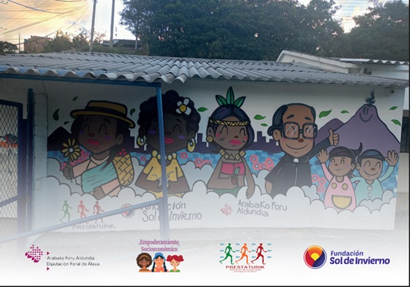
Gracias a la alianza con la Fundación Sol de Invierno, logramos capacitar a 60 mujeres en amigurumi, huertas caseras y manicura. Este proyecto no solo fortaleció sus habilidades técnicas, sino que abrió nuevas puertas para su desarrollo económico y autonomía financiera. ¡Transformamos talento en productividad real!
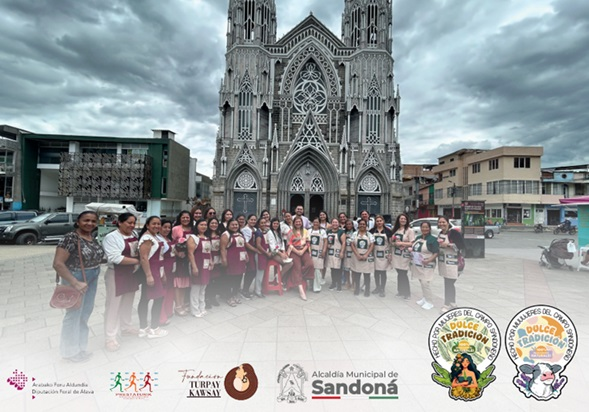
¡Transformamos ideas en empresas! Capacitamos a 40 mujeres rurales del corregimiento de San Miguel y del de Santa Rosa del Municipio de Sandoná para convertir el plátano y la leche en productos gastronómicos innovadores. El proyecto no solo les enseñó a transformar la materia prima, sino también a dominar sus finanzas y a estructurar sus propios negocios, entregándoles incluso la identidad visual y el logo de sus marcas. El gran broche de oro fue la primera Feria Gastronómica del municipio de Sandoná, el escenario donde estas mujeres demostraron que el campo tiene un potencial empresarial imparable.
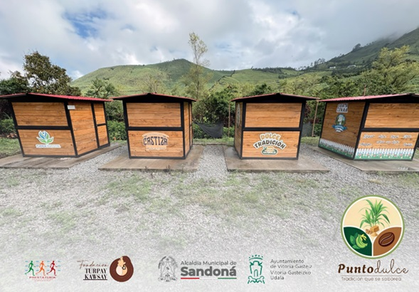
Lo que comenzó como una obra de infraestructura en Sandoná, hoy es un motor de vida, tradición y progreso. Punto Dulce nació para transformarlo todo: un mercadillo que hoy empodera a más de 20 mujeres cabezas de hogar y sus familias, brindándoles un espacio propio para generar ingresos dignos a través de sus productos locales.
Este rincón no solo activa la economía de la región, sino que se ha convertido en el epicentro donde se salvaguarda y exalta la riqueza gastronómica de nuestra tierra.
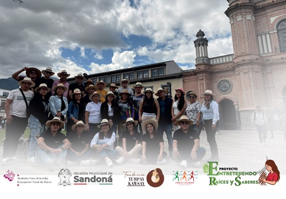
En el corazón de Sandoná, 20 mujeres transformaron la tradicional paja de iraca en arte, sustento y orgullo. A través de este proyecto, sus manos no solo aprendieron las técnicas para dar forma a hermosas artesanías y al emblemático sombrero sandoneño, sino que también tejieron el futuro de sus familias.
Esta iniciativa logró reactivar la economía de sus hogares, generando ingresos adicionales que mejoraron su calidad de vida. Más allá del beneficio económico, el proyecto significó un reencuentro profundo con sus raíces culturales, asegurando que el legado de sus ancestros siga vivo. ¡Artesanas que trenzaron identidad, empoderamiento y progreso!
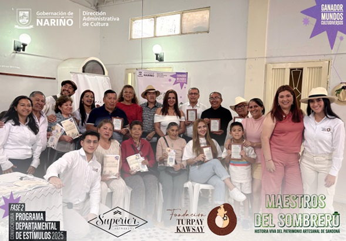
Gracias al valioso apoyo de Superior Hats, se culminó con éxito un proyecto hermoso y profundo en el municipio de Sandoná. A través de enriquecedores encuentros de saberes y entrevistas con los artesanos locales e historiadores, se logró reconstruir la ruta histórica de este arte, rescatando el cuándo, el cómo y el dónde nació la gran tradición que hoy identifica a la región.
Toda esta riqueza cultural quedó plasmada en una hermosa revista impresa; un valioso documento histórico que hoy se entrega como regalo a Sandoná y a su memoria colectiva. Con esta iniciativa, no solo se salvaguardaron las raíces, sino que se dejó una huella imborrable para las futuras generaciones de tejedores. ¡Que el orgullo por la iraca siga recorriendo el mundo!
Accede y descarga las publicaciones editoriales e investigaciones culturales financiadas y editadas por nuestra fundación:
Un compendio histórico y fotográfico que recopila el origen, las vivencias y los saberes ancestrales de los tejedores de paja de iraca en Sandoná. Salvaguardia de la memoria colectiva regional.
Leer Libro DigitalMemoria institucional y técnica de los talleres artesanales. Este documento detalla los procesos de empoderamiento, las metodologías de diseño y el impacto social en las familias beneficiarias.
Leer Libro DigitalConoce las iniciativas actuales en las que estamos enfocando nuestros esfuerzos en este momento:
Este es un proyecto formativo gratuito de teatro dirigido a jóvenes entre los 13 y 28 años del municipio de Sandoná, Nariño, que busca fortalecer la identidad cultural, el desarrollo artístico y la participación comunitaria a través de las artes escénicas.
Este espacio de formación ofrece herramientas en expresión corporal, actuación e improvisación, oralidad y voz, y creación colectiva, promoviendo el teatro como un medio para el crecimiento personal, la creatividad y la construcción de tejido social.
Inspirado en las tradiciones, la memoria y el patrimonio cultural de Sandoná, el proyecto invita a las y los participantes a explorar sus raíces, narrar sus historias y convertirlas en experiencias escénicas que fortalezcan el sentido de pertenencia y la valoración de la cultura local.
Durante el proceso formativo, los jóvenes desarrollarán habilidades comunicativas, artísticas y sociales, fomentando el trabajo en equipo, el liderazgo, la confianza y la expresión libre. Como resultado, se crearán montajes teatrales construidos de manera colectiva que reflejen la riqueza cultural del territorio y el talento de sus participantes.
Entre Sombras y Sombreros es una iniciativa de la Fundación Turpay Kawsay, con el apoyo de la Alcaldía Municipal de Sandoná y el Ministerio de las Culturas, las Artes y los Saberes, reafirmando el compromiso con la formación artística como herramienta de transformación social y preservación de la identidad cultural.
"Nuestra cultura se vive, se crea y se comparte."
Agéndate y acompáñanos en nuestras futuras actividades, ferias, talleres abiertos y encuentros comunitarios:
Es una iniciativa que nace con el propósito de recuperar y modernizar el Centro Médico del corregimiento El Vergel, convirtiéndolo en un espacio digno, seguro y funcional para la atención de la comunidad.
Este proyecto contempla la remodelación integral de la infraestructura, mejorando sus condiciones físicas, estéticas y operativas para ofrecer un ambiente más cómodo, accesible y adecuado tanto para los usuarios como para el personal de salud. La intervención busca fortalecer la prestación de los servicios médicos, promoviendo una atención más humanizada y de mayor calidad.
Más que una obra de infraestructura, Rehabilitando el Corazón del Vergel representa el compromiso con el bienestar, la salud y el desarrollo de la comunidad, devolviendo a este centro médico su papel como un lugar de cuidado, esperanza y encuentro para las familias del territorio.
La culminación de este importante proceso se celebrará con la inauguración oficial el próximo 17 de julio, fecha que marcará el inicio de una nueva etapa para el corregimiento, reafirmando el compromiso con el fortalecimiento de los servicios de salud y la mejora de la calidad de vida de sus habitantes.
Con esta intervención, el Centro Médico de El Vergel se consolida como un símbolo de renovación, progreso y trabajo conjunto en beneficio de toda la comunidad.
"Rehabilitar un centro de salud es fortalecer el corazón de una comunidad."
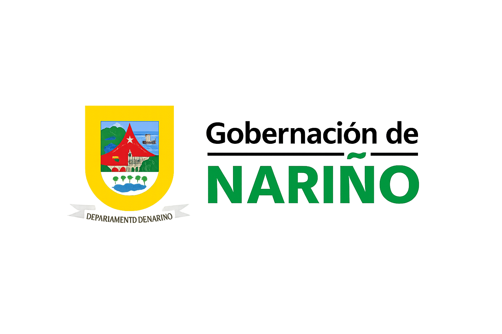
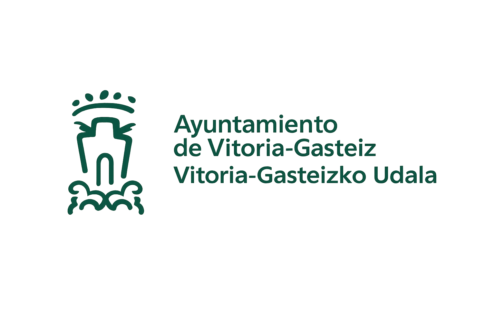
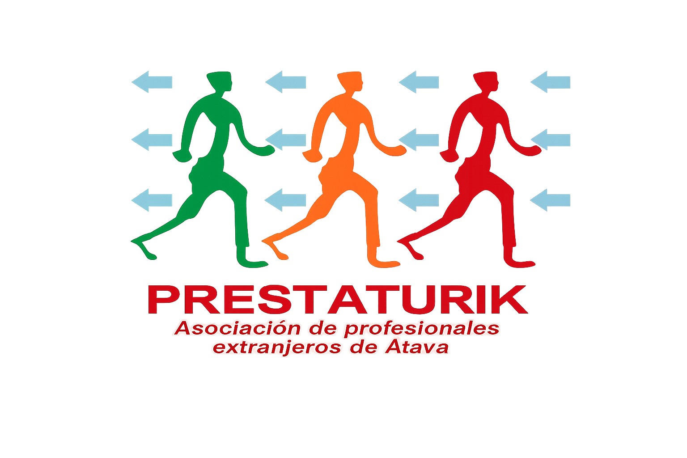
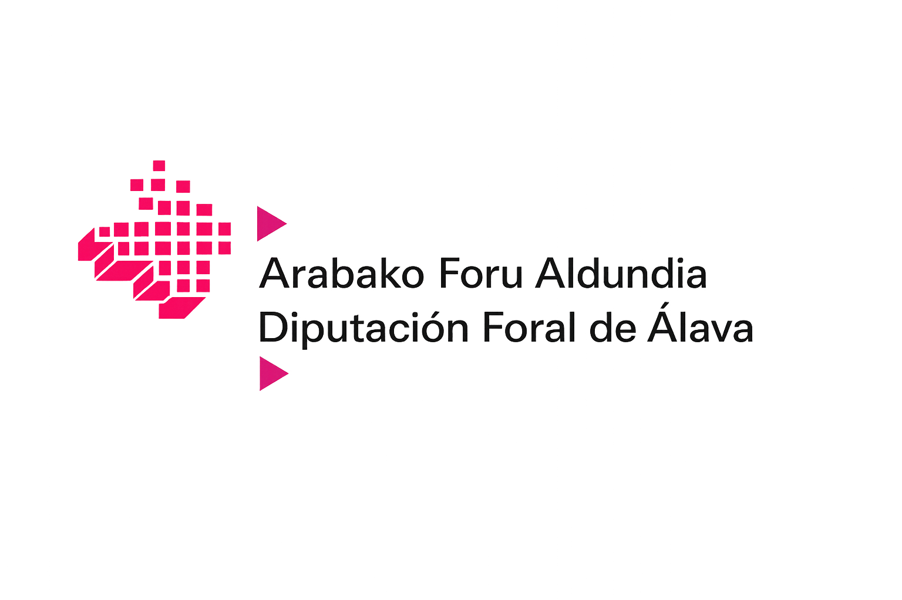
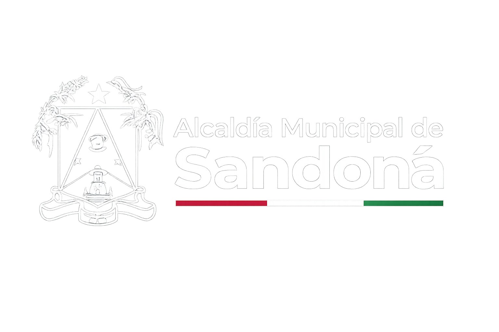
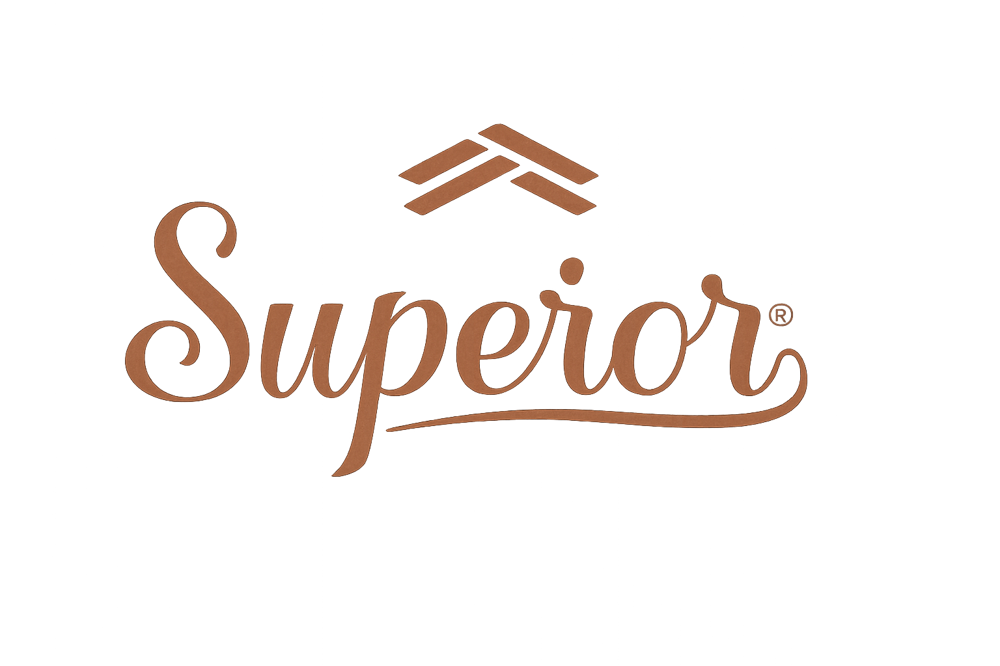
¿Tienes dudas, deseas realizar una alianza estratégica o vincularte como voluntario? Déjanos un mensaje: